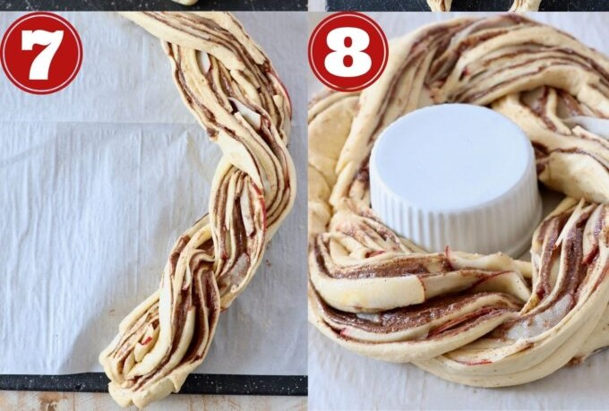

Cinnamon Roll Wreath with Apples

1.Roll out the crescent roll dough. Place a large piece of parchment paper on a flat work surface. Place both sheets of crescent roll dough slightly overlapping on the parchment paper and press the seams together to form one large crescent roll rectangle.
2.Top with the cinnamon sugar butter. In a medium bowl, combine softened butter with granulated sugar, brown sugar and ground cinnamon. Spread this mixture evenly across the crescent roll dough.
3.Add the apples. Core and thinly slice one Pazazz apple, then place the slices on top of the cinnamon sugar butter in an even layer, not overlapping. Overlapping the apples will make it difficult to roll up and form into the wreath.
4.Roll it up. Roll the crescent roll dough up tightly over the apples and the cinnamon sugar butter into a tube.
5.Slice it in half. Use a sharp knife to slice lengthwise through the middle of the cinnamon roll tube.
6.Separate the two halves. Once you’ve sliced the cinnamon roll tube in half, separate the two halves, and make sure the cinnamon butter and apples are facing up on both halves.
